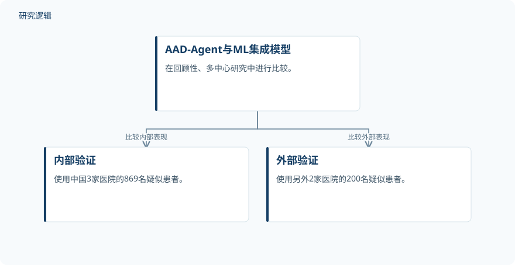

摘要解读
大语言模型增强智能体用于多中心急性主动脉夹层快速诊断
An LLM-enhanced AI agent for rapid diagnosis of acute aortic dissection in multi-center settings
解读更新 2026-11-15 07:22 · 依据公开摘要整理，未核验全文细节
急性主动脉夹层的早期识别困难，但影像检查前的辅助分诊不能等同于确诊。这项研究评估了大语言模型增强的AAD-Agent，阅读重点是其跨医院表现，以及“辅助排除”与“替代检查”之间的边界。
文章目录
CTA之前，如何辅助识别低风险患者
急性主动脉夹层（AAD）是高死亡率的心血管急症，在计算机断层血管成像（CTA）之前实现早期诊断仍有挑战。研究将AAD-Agent定位为影像检查前的分诊辅助工具，而不是CTA的替代品，其预期用途是帮助低风险患者暂缓CTA检查。
用多中心回顾性数据比较两类模型
研究采用回顾性、多中心设计，将AAD-Agent与机器学习（ML）集成模型进行比较。内部验证使用来自中国3家医院的869名疑似患者，外部验证使用另外2家医院的200名疑似患者。摘要还报告了AAD-Agent采用DeepSeek-R1、GPT-3.5和GPT-4o时的外部表现，但未说明智能体的具体输入、提示词或内部工作流程。
依据摘要整理的多中心比较示意


概括两类模型接受内部与外部验证的关系，不表示模型训练流程，也不是论文原图。
下载 SVG图示关系说明
实线表示相邻阶段的信息流，虚线表示跨阶段联系或反馈。
AAD-Agent与ML集成模型 → 内部验证：比较内部表现；AAD-Agent与ML集成模型 → 外部验证：比较外部表现
外部表现较稳定，但不具备确诊能力
ML集成模型在内部验证中的准确率为0.948、F1分数为0.964，外部验证时分别降至0.540和0.600。AAD-Agent采用DeepSeek-R1时，外部准确率和F1分数为0.715、0.820；采用GPT-3.5时为0.715、0.825；采用GPT-4o时为0.710、0.803。摘要据此报告，AAD-Agent在不同大语言模型下保持了较稳定的外部表现。
摘要同时指出，病例富集设计会抬高这些指标。按1%患病率调整后，阴性预测值约为99.6%，作者据此支持其作为安全、低成本的辅助排除工具。不过，这不能视为已完成前瞻性安全验证：其外部特异度较低，不适合用于确诊，应用仍需等待前瞻性验证。
高阴性预测值不等于已验证临床安全性
仅凭摘要，无法判断患者的具体构成、入排标准、各中心差异，以及病例富集对结果的具体影响；也无法判断两类模型的输入是否一致、比较是否经过充分控制，或性能差异的不确定性。摘要未给出外部特异度的具体数值，也未提供实际减少CTA检查、漏诊风险或成本变化的验证结果。未报告不代表论文没有开展相关分析，但这些信息不能由当前资料补足。
阅读启发：先辨清排除任务，再看模型指标
阅读启发：评价这类大语言模型智能体，不宜只比较准确率，还应关注它究竟承担排除还是确诊任务。进一步阅读时，值得核对患病率调整的依据、排除阈值和漏诊情况，以及外部中心之间的表现差异。本文也提示，跨中心稳定性与临床可用性是不同问题，不能从前者直接推导后者。
以上为本站阅读启发与建议，不是论文已验证的结论。